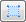
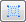

Investigating Data¶
The Pick tab on the controls panel allows you to see the data in the workspace.
The Toolbar¶
- Navigate in the instrument display window.
- Edit a shape.
- Draw an ellipse.
 - Draw a rectangle.
- Draw an elliptical ring.
 - Draw a rectangular ring.
- Select a single detector.
- Select a tube/bank.
- Add a single crystal peak.
- Erase a peak.
Picking a Single Detector¶
The Single Pixel tool displays the detector data in the mini-plot at the bottom of the tab.
Hover the mouse over a detector and see the mini-plot update.
Picking a Tube¶
The Tube selection tool is useful for tube instruments. When it’s on the mini-plot displays the integrated data in the whole tube. The integration is done either over the detectors in the tube (Sum option) or over time (Integrate). To switch between the option use the context menu of the mini-plot:
Summing over the detectors¶
With the Sum option the mini-plot displays a sum of the counts in all detectors in a tube vs time of flight.
Integrating over the time of flight¶
With the Integrate option the mini-plot displays the counts integrated over time of flight vs detector position in the tube.
Selecting Arbitrary Sets of Detectors¶
The rest of the buttons in the top row are for making complex selections. Buttons are for drawing shapes, is for editing them.
Draw an ellipse¶
Click the button.
Click and hold the mouse button down to start drawing.
Drag to resize.
{kind=link}
Edit a shape¶
Switch on the editing tool .
Click on a shape you would like to edit. The selected shape displays control points as small white rectangles.
Drag the control points to resize the shape.
To translate the shape click inside its shaded area and drag.
To select multiple shapes draw a rubber band around them.
{kind=link}
The selected shapes are indicated by drawing a bounding box around each of them.
{kind=link}
Only translation is possible for a multiple selection.
Sum selected detectors¶
The mini-plot automatically sums the counts in the detectors covered by the shapes and plots them vs time of flight.